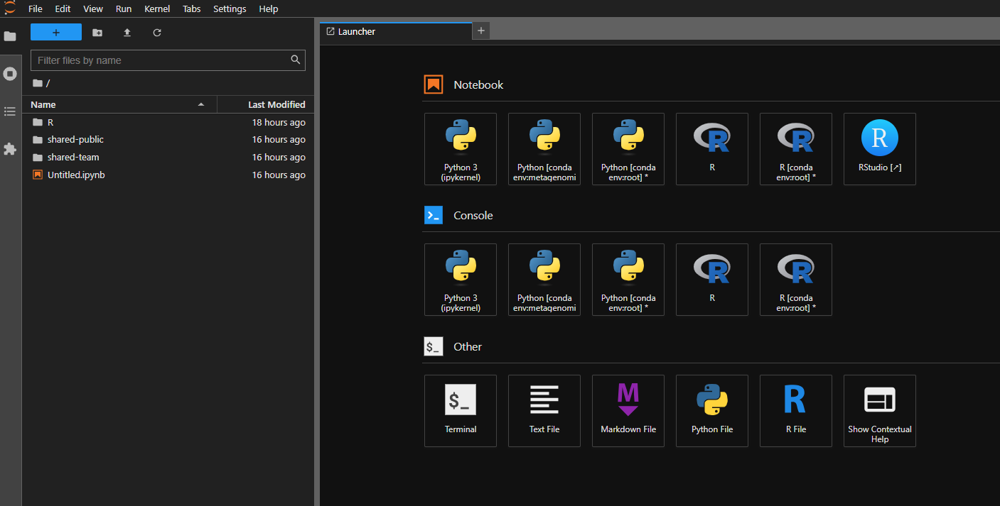
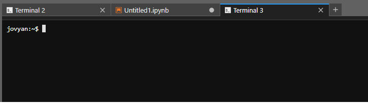
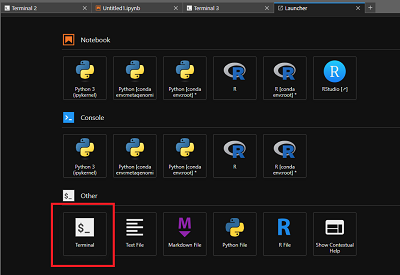
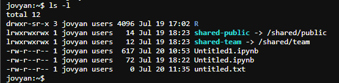

Read this first - Notebook Servers#
Welcome to CLIMB's Jupyter Notebook Servers, your new home on CLIMB-BIG-DATA. The Notebook server is a lightweight virtualised installation of Linux, capable of running complex data science and bioinformatics tasks.
In this short introduction, we will introduce the notebook server and help you move in into your new home. The working pattern may be slightly different to what you are used to, so we encourage you to peruse this and associated documentation to get the most out of the Jupyter Notebook Servers.
These notebooks are truly powerful if used correctly, as shown in these walkthroughs:
Advantages of the Notebook#
Just as if you have your own physical machine, you'll have terminal access and a filesystem. Your home directory is persisted, even when your server is terminated, and you'll have out-of-the-box access to fantastic features like a shared team volume, S3 buckets and more.
| Benefits | Details | |
|---|---|---|
| Accessible anywhere in the world | Eliminates key loss and VM lockouts. Access notebook servers through a user-friendly web interface, with time-limited sharing links for convenience. | |
| Flexible resource usage | Tier-based access to minimum and maximum vCPUs and memory for notebook servers. Upgrade for larger servers or use K8s for additional cluster resources. No need to reinstall. | |
| GPU access | Containers enable equitable GPU sharing, making them affordable compared to the VM model. CLIMB-BIG-DATA base image is pre-configured for easy A100 utilization. | |
| Sandboxed environment for teaching and training | Simplifies workshops: create a team, invite attendees, and share materials on team drive or S3. No SSH login hassles. | |
| Pre-installed software and tools | CLIMB-BIG-DATA container has pre-installed Conda, Nextflow, and CLI tools, ready to use, simplifying OS setup and team integration. |
Key differences to standard Linux installation#
The notebook server is a virtualised installation of Linux, and as such there are some differences to a standard Linux installation.
| Restriction | Solution |
|---|---|
| No system wide superuser (sudo) | Install software within home directory with package managers (e.g. conda) rather than apt/yum |
| No running of web services | Static results (including HTML) can be hosted via S3. |
| No support for opening ports | This is out of scope for notebooks, but CLIMB-BIG-DATA does have short term leases for more traditional virtual machines |
Resource Allocation and Usage Guidelines#
Team members accessing the free tier quota are granted access up to a total of 14 CPUs, with 8 allocated for opening a single notebook and 6 reserved for Nextflow tasks. Additionally, teams receive 1TB of fast SSD team share storage for collaborative projects and 1TB of S3 storage for data storage needs.
Resource Allocation Breakdown#
- CPU Allocation:
-
Total Available CPUs: 14
- CPUs for Notebook Opening: 8
- CPUs Reserved for Nextflow Tasks: 6
-
Storage Allocation:
- Fast SSD Team Share Storage: 1TB
- S3 Storage: 1TB
These resources are designed to support your team's computational and storage needs effectively. Should your team require additional resources beyond the free tier quota, please feel free to contact us for quota expansion options and pricing details.
Notebook Environment and Usage#
- Data and Environment Persistence:
-
As a user, rest assured that when you stop your notebook, your data and environment settings are safely preserved. Upon relaunching, you'll find all your files and environment configurations intact, though any ongoing processes will cease.
-
Notebook Sharing:
- When you initiate a notebook session, you have the option to share access with another team member for up to 24 hours using a shareable link. However, if your notebook is stopped, another user can launch their own instance independently.
-
Moreover, it's crucial to acknowledge that this feature is primarily geared towards troubleshooting and instructional use rather than practical work applications. Its primary purpose is to assist in problem-solving and enhance learning experiences, rather than being utilized as a primary tool for day-to-day tasks.
-
Best Practices:
- As a user, when considering storage options, keep in mind that Team Share Storage is primarily intended for temporary data storage. While it offers convenience and accessibility for collaborative projects, it's important to avoid extended storage durations due to its limited capacity. For long-term data storage and enhanced data safety, consider utilizing S3 buckets
Acclimatise yourself to the Notebook Server#
When you first open the notebook server, you'll be presented with a JupyterLab interface. This is a web-based interface that allows you to interact with the notebook server.

If you are unsure how to reach this, please see the quick start guide.
The JupyterLab interface is divided into a few areas. You'll see context menus at the top (File, Edit, View, Run etc.), a file browser pane on the left, and an activity area that initially displays a launcher interface with tiles. Clicking on one of these tiles will open a new tab in the activity area.
These tiles are shortcuts to launch different applications. The most common one is the Terminal, which will open a terminal in the activity area. You can also launch a Jupyter Notebook, RStudio, or a text editor.
You can have multiple tabs open in the activity area, and you can drag and drop them to rearrange them. You can also drag and drop files from the file browser into the activity area to open them in the appropriate application. To create a new tab, click the + icon in the top right of the activity area, or use File > New Launcher.

For this reason, there is no option to launch multiple notebook servers from Bryn. You should be able to have all your work running in tandem in one notebook server.
Is this just for beginners?#
Absolutely not. Whilst the new service is certainly far easier to get started with, it is also far more powerful for advanced users. We've ensured that each team gets a pre-mounted Kubernetes service user with permissions scoped to your team's namespace. This allows users to run Nextflow workflows on the external K8s execution environment, but also to run other containers in pods within their namespace via kubectl.
Organising your data storage#
The notebook server has a few different storage locations available to you. We can explore those via the terminal.

From the terminal, you can see your home directory, which is where you'll be by default when you open the terminal. You can see the contents of your home directory by typing ls:
cd ~/
ls

Your home directory will look similar to home directories on other UNIX-based system, as a collection of files of folders. There are two special folders, specific to notebooks:
shared-team- this is a symlink to the team share, which is a large, fast, shared storage location for your team. You can read and write to this folder, and it is shared with all members of your team.shared-public- this is a read-only share, managed by the CLIMB-BIG-DATA team. This contains some useful data and public resources for bioinformatics workflows.
Try listing the contents of the shared-public/db folder:
ls ~/shared-public/db -l
total 0
drwxrwxr-x+ 2 4744 users 620 Apr 15 12:17 blast
drwxrwxr-x+ 2 4744 users 1 Apr 16 20:56 gtdb
drwxrwxr-x+ 14 4744 users 12 Apr 15 11:16 kraken2
drwxrwxr-x+ 2 4744 users 9 Apr 16 17:36 taxonomy
These are large databases for bioinformatics tools. For example, the kraken2 folder contains the databases for Kraken2 and Bracken. You can use these in your workflows, without having to download them yourself. These locations do not count to your storage quota.
The shared-team folder is a good place to store your data. It is visible to everyone in your team, making it easy to collaborate on projects.
You can list the contents of the shared-team folder:
ls ~/shared-team
It will likely be empty, if this is your first time using CLIMB. You have full access to this location and can create folders and files as you wish. Try this with touch, that will create an empty file (if it doesn't exist).
Try using touch on other locations, and you will see that you can only write to your home directory, the shared-team folder and special locations like tmp/.
In locations where you can write, you will see the empty file this appear:
jovyan:~$ touch ~/this
jovyan:~$ ls -l
total 12
drwxr-sr-x 3 jovyan users 4096 Jul 19 17:02 R
lrwxrwxrwx 1 jovyan users 14 Jul 19 18:23 shared-public -> /shared/public
lrwxrwxrwx 1 jovyan users 12 Jul 19 18:23 shared-team -> /shared/team
-rw-r--r-- 1 jovyan users 0 Jul 20 11:47 this
-rw-r--r-- 1 jovyan users 617 Jul 20 10:53 Untitled1.ipynb
As opposed to ~/shared-public and system locations like /usr/local/bin where we cannot touch this:
jovyan:~$ touch ~/shared-public/this
touch: cannot touch '/home/jovyan/shared-public/this': Read-only file system
jovyan:~$ touch /usr/local/bin
touch: setting times of '/usr/local/bin': Permission denied
For more information about data storage, please read the Understanding Storage guide.
What's next?#
The notebook server is flexible, allowing you work the way you want. You may have existing data and workflows that you want to bring to the notebook server, if so please read the Understanding Storage guide.
You may also want to read more about the specific features of the notebook server:
Or there's the Walkthroughs, that will take you through a worked example of a bioinformatics analysis: